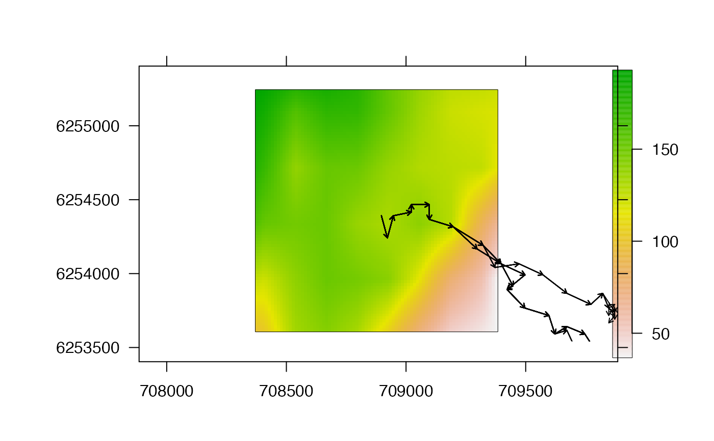
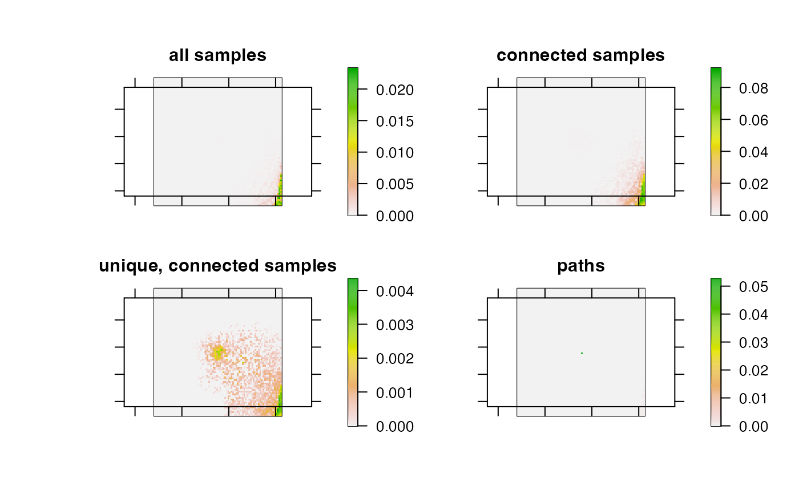

This function is designed to simplify the pf_archive-class object from pf that defines sampled particle histories into a set of movement paths. The function identifies pairs of cells between which movement may have occurred at each time step (if necessary), (re)calculates distances and probabilities between connected cell pairs and then, if specified, links pairwise movements between cells into a set of possible movement paths.
pf_simplify( archive, max_n_particles = NULL, max_n_particles_sampler = c("random", "weighted", "max"), bathy = NULL, calc_distance = NULL, calc_distance_lcp_fast = NULL, calc_distance_graph = NULL, calc_distance_limit = NULL, calc_distance_barrier = NULL, calc_distance_barrier_limit = NULL, calc_distance_barrier_grid = NULL, calc_distance_restrict = FALSE, calc_distance_algorithm = "bi", calc_distance_constant = 1, mobility = NULL, mobility_from_origin = mobility, write_history = NULL, cl = NULL, varlist = NULL, use_all_cores = FALSE, return = c("path", "archive"), summarise_pr = FALSE, max_n_copies = NULL, max_n_copies_sampler = c("random", "weighted", "max"), max_n_paths = 100L, add_origin = TRUE, verbose = TRUE )
Arguments
| archive | A |
|---|---|
| max_n_particles | (optional) An integer that defines the maximum number of particles to selected at each time step. If supplied, particle samples are thinned, with |
| max_n_particles_sampler | If |
| bathy | A |
| calc_distance | A character that defines the method used to calculate distances between sequential combinations of particles (see |
| calc_distance_lcp_fast | (optional) If |
| calc_distance_graph | (optional) If |
| calc_distance_limit | (optional) If |
| calc_distance_barrier | (optional) If |
| calc_distance_barrier_limit | (optional) If |
| calc_distance_barrier_grid | (optional) If |
| calc_distance_restrict | (optional) If and |
| calc_distance_algorithm, calc_distance_constant | Additional shortest-distance calculation options if |
| mobility, mobility_from_origin | (optional) The mobility parameters (see |
| write_history | A named list of arguments, passed to |
| cl, varlist, use_all_cores | (optional) Parallelisation options for the first stage of the algorithm, which identifies connected cell pairs, associated distances and movement probabilities. The first parallelisation option is to parallelise the algorithm over time steps via |
| return | A character ( |
| summarise_pr | (optional) For |
| max_n_copies | (optional) For |
| max_n_copies_sampler | (optional) For |
| max_n_paths | (optional) For |
| add_origin | For |
| verbose | A logical input that defines whether or not to print messages to the console to monitor function progress. |
Value
If return = "archive", the function returns a pf_archive-class object, as inputted, but in which only the most likely record of each cell that was connected to cells at the next time step is retained and with the method = "pf_simplify" flag. If return = "path", the function returns a pf_path-class object, which is a dataframe that defines the movement paths.
Details
The implementation of this function depends on how pf has been implemented and the return argument. Under the default options in pf, the fast Euclidean distances method is used to sample sequential particle positions, in which case the history of each particle through the landscape is not retained and has to be assembled afterwards. In this case, pf_simplify calculates the distances between all combinations of cells at each time step, using either a Euclidean distances or shortest distances algorithm according to the input to calc_distance. Distances are converted to probabilities using the `intrinsic' probabilities associated with each location and the movement models retained in archive from the call to pf to identify possible movement paths between cells at each time step. If the fast Euclidean distances method has not been used, then pairwise cell movements are retained by pf. In this case, the function simply recalculates distances between sequential cell pairs and the associated cell probabilities, which are then processed according to the return argument.
Following the identification of pairwise cell movements, if return = "archive", the function selects all of the unique cells at each time step that were connected to cells at the next time step. (For cells that were selected multiple times at a given time step, due to sampling with replacement in pf, if summarise_pr is supplied, only one sample is retained: in maps of the `probability of use' across an area (see pf_plot_map), this ensures that cell scores depend on the number of time steps when the individual could have occupied a given cell, rather than the total number of samples of a location.) Otherwise, if return = "path", pairwise cell movements are assembled into complete movement paths.
Author
Edward Lavender
Examples
#### Example particle histories # In these examples, we will use the example particle histories included in flapper summary(dat_dcpf_histories)#> Length Class Mode #> history 18 -none- list #> method 1 -none- character #> args 21 -none- list#### Example (1): The default implementation paths_1 <- pf_simplify(dat_dcpf_histories)#> flapper::pf_simplify() called (@ 2022-05-28 18:15:14)... #> ... Getting pairwise cell movements based on calc_distance = 'euclid'... #> ... ... Stepping through time steps to join coordinate pairs... #> ... ... Identifying connected cells... #> ... Assembling paths... #> ... Formatting paths... #> ... Adding cell coordinates and depths... #> ... flapper::pf_simplify() call completed (@ 2022-05-28 18:15:14) after ~0 minutes.## Demonstration that the distance and probabilities calculations are correct # The simple method below works if three conditions are met: # ... The 'intrinsic' probability associated with each cell is the same (as for DC algorithm); # ... Paths have been reconstructed via pf_simplify() using Euclidean distances; # ... The calc_movement_pr() movement model applies to all time steps; require(magrittr)#>#> #>#> #> #>require(rlang) paths_1 <- paths_1 %>% dplyr::group_by(.data$path_id) %>% dplyr::mutate(cell_xp = dplyr::lag(.data$cell_x), cell_yp = dplyr::lag(.data$cell_y), cell_dist_chk = sqrt((.data$cell_xp - .data$cell_x)^2 + (.data$cell_yp - .data$cell_y)^2), cell_pr_chk = dat_dcpf_histories$args$calc_movement_pr(.data$cell_dist_chk), dist_equal = .data$cell_dist_chk == .data$cell_dist_chk, pr_equal = .data$cell_pr == .data$cell_pr_chk) %>% data.frame() utils::head(paths_1)#> path_id timestep cell_id cell_x cell_y cell_z cell_pr dist #> 1 1 0 3241 708897.1 6254392 135.0958 1.000000e+00 NA #> 2 1 1 3722 708922.1 6254242 134.0199 1.808832e-05 152.06906 #> 3 1 2 3243 708947.1 6254392 133.6996 1.663445e-05 152.06906 #> 4 1 3 3166 709022.1 6254416 133.6938 1.569277e-04 79.05694 #> 5 1 4 3006 709022.1 6254466 134.0630 1.826367e-04 50.00000 #> 6 1 5 3009 709097.1 6254466 134.9762 1.547789e-04 75.00000 #> cell_xp cell_yp cell_dist_chk cell_pr_chk dist_equal pr_equal #> 1 NA NA NA NA NA NA #> 2 708897.1 6254392 152.06906 0.06891651 TRUE FALSE #> 3 708922.1 6254242 152.06906 0.06891651 TRUE FALSE #> 4 708947.1 6254392 79.05694 0.74022781 TRUE FALSE #> 5 709022.1 6254416 50.00000 0.92414182 TRUE FALSE #> 6 709022.1 6254466 75.00000 0.77729986 TRUE FALSE## Demonstration that the depths of sampled cells are correct paths_1$cell_z_chk <- raster::extract(dat_dcpf_histories$args$bathy, paths_1$cell_id) all.equal(paths_1$cell_z, paths_1$cell_z_chk)#> [1] TRUE## Compare depth time series # There is a relatively large degree of mismatch here, which reflects # ... the low resolution bathymetry data used for the algorithm. pf_plot_1d(paths_1, dat_dc$args$archival)#> path_id loglik delta #> 1 4 -145.7709 0.00000000 #> 2 5 -145.8111 0.04017947 #> 3 3 -145.8431 0.07217439 #> 4 2 -145.9346 0.16376265 #> 5 1 -146.8934 1.12246741 #> 6 19 -147.6582 1.88729381 #> 7 24 -147.6644 1.89348096 #> 8 18 -147.6736 1.90275861 #> 9 23 -147.6798 1.90894575 #> 10 9 -147.6820 1.91112531 #> 11 14 -147.6882 1.91731246 #> 12 8 -147.6975 1.92659011 #> 13 13 -147.7037 1.93277725 #> 14 16 -147.7395 1.96864247 #> 15 17 -147.7395 1.96864247 #> 16 21 -147.7457 1.97482962 #> 17 22 -147.7457 1.97482962 #> 18 6 -147.7634 1.99247397 #> 19 7 -147.7634 1.99247397 #> 20 11 -147.7695 1.99866112 #> 21 12 -147.7695 1.99866112 #> 22 20 -151.9751 6.20417920 #> 23 25 -151.9813 6.21036635 #> 24 10 -151.9989 6.22801070 #> 25 15 -152.0051 6.23419785# 2-d visualisation pf_plot_2d(paths_1, dat_dcpf_histories$args$bathy, add_paths = list(length = 0.05))#>#> Warning: zero-length arrow is of indeterminate angle and so skipped#> Warning: zero-length arrow is of indeterminate angle and so skipped#> Warning: zero-length arrow is of indeterminate angle and so skipped#> Warning: zero-length arrow is of indeterminate angle and so skipped#> Warning: zero-length arrow is of indeterminate angle and so skipped#> Warning: zero-length arrow is of indeterminate angle and so skipped#> Warning: zero-length arrow is of indeterminate angle and so skipped#> Defining plot properties... #> Producing plot...#### Example (2): Re-calculate distances as shortest distances ## Implement flapper::pf() # For this example, we need to increase the number of particles # ... for Euclidean-based sampling to generate viable paths # ... when we consider shortest distances set.seed(1) dcpf_args <- dat_dcpf_histories$args dcpf_args$calc_distance_euclid_fast <- TRUE dcpf_args$n <- 50 out_dcpf_2 <- do.call(pf, dcpf_args)#> flapper::pf() called (@ 2022-05-28 18:15:15)... #> ... Setting up function... #> ... Determining the set of possible starting locations (t = 1)... #> ... Implementing algorithm iteratively over time steps... #> ... ... Time = 1... #> ... ... ... Selecting candidate starting positions for the current time step... #> ... ... ... For each particle, getting the possible positions for the next time step... #> ... ... Time = 2... #> ... ... ... Selecting candidate starting positions for the current time step... #> ... ... ... For each particle, getting the possible positions for the next time step... #> ... ... Time = 3... #> ... ... ... Selecting candidate starting positions for the current time step... #> ... ... ... For each particle, getting the possible positions for the next time step... #> ... ... Time = 4... #> ... ... ... Selecting candidate starting positions for the current time step... #> ... ... ... For each particle, getting the possible positions for the next time step... #> ... ... Time = 5... #> ... ... ... Selecting candidate starting positions for the current time step... #> ... ... ... For each particle, getting the possible positions for the next time step... #> ... ... Time = 6... #> ... ... ... Selecting candidate starting positions for the current time step... #> ... ... ... For each particle, getting the possible positions for the next time step... #> ... ... Time = 7... #> ... ... ... Selecting candidate starting positions for the current time step... #> ... ... ... For each particle, getting the possible positions for the next time step... #> ... ... Time = 8... #> ... ... ... Selecting candidate starting positions for the current time step... #> ... ... ... For each particle, getting the possible positions for the next time step... #> ... ... Time = 9... #> ... ... ... Selecting candidate starting positions for the current time step... #> ... ... ... For each particle, getting the possible positions for the next time step... #> ... ... Time = 10... #> ... ... ... Selecting candidate starting positions for the current time step... #> ... ... ... For each particle, getting the possible positions for the next time step... #> ... ... Time = 11... #> ... ... ... Selecting candidate starting positions for the current time step... #> ... ... ... For each particle, getting the possible positions for the next time step... #> ... ... Time = 12... #> ... ... ... Selecting candidate starting positions for the current time step... #> ... ... ... For each particle, getting the possible positions for the next time step... #> ... ... Time = 13... #> ... ... ... Selecting candidate starting positions for the current time step... #> ... ... ... For each particle, getting the possible positions for the next time step... #> ... ... Time = 14... #> ... ... ... Selecting candidate starting positions for the current time step... #> ... ... ... For each particle, getting the possible positions for the next time step... #> ... ... Time = 15... #> ... ... ... Selecting candidate starting positions for the current time step... #> ... ... ... For each particle, getting the possible positions for the next time step... #> ... ... Time = 16... #> ... ... ... Selecting candidate starting positions for the current time step... #> ... ... ... For each particle, getting the possible positions for the next time step... #> ... ... Time = 17... #> ... ... ... Selecting candidate starting positions for the current time step... #> ... ... ... For each particle, getting the possible positions for the next time step... #> ... ... Time = 18... #> ... ... ... Selecting candidate starting positions for the current time step... #> ... flapper::pf() call completed (@ 2022-05-28 18:15:16) after ~0.02 minutes.## Implement pf_simplify() using shortest distances paths_2 <- pf_simplify(out_dcpf_2, calc_distance = "lcp")#> flapper::pf_simplify() called (@ 2022-05-28 18:15:16)... #> ... Getting pairwise cell movements based on calc_distance = 'lcp'... #> ... Setting up LCP calculations... #> ... ... Setting up cost-surface for calc_distance = 'lcp'... #> flapper::lcp_costs() called (@ 2022-05-28 18:15:16)... #> ... Defining transition matrices...#> Warning: transition function gives negative values#> ... Calculating distance matrices... #> ... Assembling LCP costs... #> ... flapper::lcp_costs() call completed (@ 2022-05-28 18:15:16) after ~0 minutes. #> flapper::lcp_graph_surface() called (@ 2022-05-28 18:15:16)... #> ... Defining nodes, edges and costs to make graph... #> ... Constructing graph object... #> ... flapper::lcp_graph_surface() call completed (@ 2022-05-28 18:15:16) after ~0 minutes. #> ... ... Stepping through time steps to join coordinate pairs...#>#>#>#>#>#>#>#>#>#>#>#>#>#>#>#>#>#>#> ... ... Identifying connected cells... #> ... Assembling paths... #> ... Formatting paths... #> ... Adding cell coordinates and depths... #> ... flapper::pf_simplify() call completed (@ 2022-05-28 18:15:17) after ~0.01 minutes.# ... Duration: ~ 0.655 s system.time( invisible(utils::capture.output( pf_simplify(out_dcpf_2, calc_distance = "lcp") )) )#> Warning: transition function gives negative values#>#>#>#>#>#>#>#>#>#>#>#>#>#>#>#>#>#>#> user system elapsed #> 0.645 0.002 0.647## Demonstrate the LCP calculations are correct paths_2_lcps <- lcp_interp(paths_2, out_dcpf_2$args$bathy, calc_distance = TRUE)#> flapper::lcp_interp() called (@ 2022-05-28 18:15:18)... #> ... Setting up function... #> ... Processing paths... #> ... Calculating least-cost paths via flapper::lcp_over_surface()... #> flapper::lcp_over_surface() called (@ 2022-05-28 18:15:18)... #> ... Checking user inputs...#> ... Defining cost matrix...#> Warning: transition function gives negative values#> ... Using method = 'cppRouting'... #> ... ... Defining nodes, edges and costs to make graph... #> ... ... Constructing graph object... #> ... ... Implementing bi algorithm to compute least-cost paths(s)...#>#> ... flapper::lcp_over_surface() call completed (@ 2022-05-28 18:15:18) after ~0.01 minutes. #> ... Summarising distances for each least-cost path... #> ... flapper::lcp_interp() call completed (@ 2022-05-28 18:15:19) after ~0.02 minutes.#> [,1] [,2] #> [1,] NA NA #> [2,] 100.03898 100.03898 #> [3,] 60.36391 60.36391 #> [4,] 135.40893 135.40893 #> [5,] 145.74588 145.74588 #> [6,] 35.36868 35.36868## Trial options for increasing speed of shortest-distance calculations # Speed up shortest-distance calculations via (a) the graph: # ... Duration: ~0.495 s # ... Note that you may achieve further speed improvements via # ... a simplified/contracted graph # ... ... see cppRouting::cpp_simplify() # ... ... see cppRouting::cpp_contract() costs <- lcp_costs(out_dcpf_2$args$bathy)#> flapper::lcp_costs() called (@ 2022-05-28 18:15:19)... #> ... Defining transition matrices...#> Warning: transition function gives negative values#> ... Calculating distance matrices... #> ... Assembling LCP costs... #> ... flapper::lcp_costs() call completed (@ 2022-05-28 18:15:19) after ~0 minutes.#> flapper::lcp_graph_surface() called (@ 2022-05-28 18:15:19)... #> ... Defining nodes, edges and costs to make graph... #> ... Constructing graph object... #> ... flapper::lcp_graph_surface() call completed (@ 2022-05-28 18:15:19) after ~0 minutes.system.time( invisible(utils::capture.output( pf_simplify(out_dcpf_2, calc_distance = "lcp", calc_distance_graph = graph) )) )#>#>#>#>#>#>#>#>#>#>#>#>#>#>#>#>#>#>#> user system elapsed #> 0.509 0.001 0.510# Speed up shortest-distance calculations via (b) the lower Euclid dist limit # ... Duration: ~0.493 s costs <- lcp_costs(out_dcpf_2$args$bathy)#> flapper::lcp_costs() called (@ 2022-05-28 18:15:20)... #> ... Defining transition matrices...#> Warning: transition function gives negative values#> ... Calculating distance matrices... #> ... Assembling LCP costs... #> ... flapper::lcp_costs() call completed (@ 2022-05-28 18:15:20) after ~0 minutes.#> flapper::lcp_graph_surface() called (@ 2022-05-28 18:15:20)... #> ... Defining nodes, edges and costs to make graph... #> ... Constructing graph object... #> ... flapper::lcp_graph_surface() call completed (@ 2022-05-28 18:15:20) after ~0 minutes.system.time( invisible(utils::capture.output( pf_simplify(out_dcpf_2, calc_distance = "lcp", calc_distance_graph = graph, calc_distance_limit = 100) )) )#>#>#>#>#>#>#>#>#>#>#>#>#>#>#>#>#>#>#> user system elapsed #> 0.507 0.001 0.509# Speed up shortest-distance calculations via (c) the barrier # ... Duration: ~1.411 s (much slower in this example) coastline <- sf::st_as_sf(dat_coast) sf::st_crs(coastline) <- NA system.time( invisible(utils::capture.output( pf_simplify(out_dcpf_2, calc_distance = "lcp", calc_distance_graph = graph, calc_distance_limit = 100, calc_distance_barrier = coastline) )) )#>#>#>#>#>#>#>#>#>#>#>#>#>#>#>#>#>#>#> user system elapsed #> 1.404 0.002 1.407# Speed up calculations via (d) mobility limits # ... (In the examples above, the mobility parameters # ... can be extracted from out_dcpf_2, # ... so specifying them directly here in this example makes # ... no material difference, but this is not necessarily the case # ... if pf() has been implemented without mobility parameters). system.time( invisible(utils::capture.output( pf_simplify(out_dcpf_2, calc_distance = "lcp", calc_distance_graph = graph, calc_distance_limit = 100, mobility = 200, mobility_from_origin = 200) )) )#>#>#>#>#>#>#>#>#>#>#>#>#>#>#>#>#>#>#> user system elapsed #> 0.498 0.001 0.499# Speed up calculations via (e) parallelisation # ... see the details in the documentation. #### Example (3): Restrict the number of routes to each cell at each time step # Implement approach for different numbers of copies # Since we only have sampled a small number of particles for this simulation # ... this does not make any difference here, but it can dramatically reduce # ... the time taken to assemble paths and prevent vector memory issues. paths_3a <- pf_simplify(dat_dcpf_histories, max_n_copies = 1)#> flapper::pf_simplify() called (@ 2022-05-28 18:15:24)... #> ... Getting pairwise cell movements based on calc_distance = 'euclid'... #> ... ... Stepping through time steps to join coordinate pairs... #> ... ... Identifying connected cells... #> ... Assembling paths... #> ... Formatting paths... #> ... Adding cell coordinates and depths... #> ... flapper::pf_simplify() call completed (@ 2022-05-28 18:15:24) after ~0 minutes.paths_3b <- pf_simplify(dat_dcpf_histories, max_n_copies = 5)#> flapper::pf_simplify() called (@ 2022-05-28 18:15:24)... #> ... Getting pairwise cell movements based on calc_distance = 'euclid'... #> ... ... Stepping through time steps to join coordinate pairs... #> ... ... Identifying connected cells... #> ... Assembling paths... #> ... Formatting paths... #> ... Adding cell coordinates and depths... #> ... flapper::pf_simplify() call completed (@ 2022-05-28 18:15:24) after ~0.01 minutes.paths_3c <- pf_simplify(dat_dcpf_histories, max_n_copies = 7)#> flapper::pf_simplify() called (@ 2022-05-28 18:15:24)... #> ... Getting pairwise cell movements based on calc_distance = 'euclid'... #> ... ... Stepping through time steps to join coordinate pairs... #> ... ... Identifying connected cells... #> ... Assembling paths... #> ... Formatting paths... #> ... Adding cell coordinates and depths... #> ... flapper::pf_simplify() call completed (@ 2022-05-28 18:15:25) after ~0 minutes.#> [1] 1 2 3 4 5 6 7 8 9 10#> [1] 1 2 3 4 5 6 7 8 9 10 11 12 13 14 15 16 17 18 19 20 21 22 23 24 25#> [1] 1 2 3 4 5 6 7 8 9 10 11 12 13 14 15 16 17 18 19 20 21 22 23 24 25#### Example (4): Change the sampling method used to retain paths # Again, this doesn't make a difference here, but it can when there are # ... more particles. paths_4a <- pf_simplify(dat_dcpf_histories, max_n_copies = 5, max_n_copies_sampler = "random")#> flapper::pf_simplify() called (@ 2022-05-28 18:15:25)... #> ... Getting pairwise cell movements based on calc_distance = 'euclid'... #> ... ... Stepping through time steps to join coordinate pairs... #> ... ... Identifying connected cells... #> ... Assembling paths... #> ... Formatting paths... #> ... Adding cell coordinates and depths... #> ... flapper::pf_simplify() call completed (@ 2022-05-28 18:15:25) after ~0.01 minutes.paths_4b <- pf_simplify(dat_dcpf_histories, max_n_copies = 5, max_n_copies_sampler = "weighted")#> flapper::pf_simplify() called (@ 2022-05-28 18:15:25)... #> ... Getting pairwise cell movements based on calc_distance = 'euclid'... #> ... ... Stepping through time steps to join coordinate pairs... #> ... ... Identifying connected cells... #> ... Assembling paths... #> ... Formatting paths... #> ... Adding cell coordinates and depths... #> ... flapper::pf_simplify() call completed (@ 2022-05-28 18:15:25) after ~0 minutes.paths_4c <- pf_simplify(dat_dcpf_histories, max_n_copies = 5, max_n_copies_sampler = "max")#> flapper::pf_simplify() called (@ 2022-05-28 18:15:25)... #> ... Getting pairwise cell movements based on calc_distance = 'euclid'... #> ... ... Stepping through time steps to join coordinate pairs... #> ... ... Identifying connected cells... #> ... Assembling paths... #> ... Formatting paths... #> ... Adding cell coordinates and depths... #> ... flapper::pf_simplify() call completed (@ 2022-05-28 18:15:26) after ~0 minutes.#> path_id loglik delta #> 1 1 -145.7709 0.00000000 #> 2 3 -145.8111 0.04017947 #> 3 4 -145.8431 0.07217439 #> 4 5 -145.9346 0.16376265 #> 5 2 -146.8934 1.12246741 #> 6 7 -147.6582 1.88729381 #> 7 8 -147.6736 1.90275861 #> 8 6 -147.7395 1.96864247 #> 9 9 -147.7395 1.96864247 #> 10 10 -151.9751 6.20417920#> path_id loglik delta #> 1 1 -145.7709 0.00000000 #> 2 3 -145.8111 0.04017947 #> 3 4 -145.8431 0.07217439 #> 4 5 -145.9346 0.16376265 #> 5 2 -146.8934 1.12246741 #> 6 13 -147.6582 1.88729381 #> 7 10 -147.6644 1.89348096 #> 8 16 -147.6736 1.90275861 #> 9 17 -147.6798 1.90894575 #> 10 12 -147.6820 1.91112531 #> 11 11 -147.6882 1.91731246 #> 12 14 -147.6975 1.92659011 #> 13 15 -147.7037 1.93277725 #> 14 8 -147.7395 1.96864247 #> 15 18 -147.7395 1.96864247 #> 16 6 -147.7457 1.97482962 #> 17 19 -147.7457 1.97482962 #> 18 9 -147.7634 1.99247397 #> 19 20 -147.7634 1.99247397 #> 20 7 -147.7695 1.99866112 #> 21 21 -147.7695 1.99866112 #> 22 23 -151.9751 6.20417920 #> 23 24 -151.9813 6.21036635 #> 24 22 -151.9989 6.22801070 #> 25 25 -152.0051 6.23419785#> path_id loglik delta #> 1 1 -145.7709 0.00000000 #> 2 3 -145.8111 0.04017947 #> 3 4 -145.8431 0.07217439 #> 4 5 -145.9346 0.16376265 #> 5 2 -146.8934 1.12246741 #> 6 13 -147.6582 1.88729381 #> 7 10 -147.6644 1.89348096 #> 8 17 -147.6736 1.90275861 #> 9 16 -147.6798 1.90894575 #> 10 12 -147.6820 1.91112531 #> 11 11 -147.6882 1.91731246 #> 12 14 -147.6975 1.92659011 #> 13 15 -147.7037 1.93277725 #> 14 6 -147.7395 1.96864247 #> 15 21 -147.7395 1.96864247 #> 16 8 -147.7457 1.97482962 #> 17 19 -147.7457 1.97482962 #> 18 7 -147.7634 1.99247397 #> 19 18 -147.7634 1.99247397 #> 20 9 -147.7695 1.99866112 #> 21 20 -147.7695 1.99866112 #> 22 25 -151.9751 6.20417920 #> 23 24 -151.9813 6.21036635 #> 24 23 -151.9989 6.22801070 #> 25 22 -152.0051 6.23419785#### Example (5): Set the maximum number of paths for reconstruction (for speed) # Reconstruct all paths (note you may experience vector memory limitations) # unique(pf_simplify(dat_dcpf_histories, max_n_paths = NULL)$path_id) # Reconstruct one path unique(pf_simplify(dat_dcpf_histories, max_n_paths = 1)$path_id)#> flapper::pf_simplify() called (@ 2022-05-28 18:15:26)... #> ... Getting pairwise cell movements based on calc_distance = 'euclid'... #> ... ... Stepping through time steps to join coordinate pairs... #> ... ... Identifying connected cells... #> ... Assembling paths... #> ... Formatting paths... #> ... Adding cell coordinates and depths... #> ... flapper::pf_simplify() call completed (@ 2022-05-28 18:15:26) after ~0 minutes.#> [1] 1#> flapper::pf_simplify() called (@ 2022-05-28 18:15:26)... #> ... Getting pairwise cell movements based on calc_distance = 'euclid'... #> ... ... Stepping through time steps to join coordinate pairs... #> ... ... Identifying connected cells... #> ... Assembling paths... #> ... Formatting paths... #> ... Adding cell coordinates and depths... #> ... flapper::pf_simplify() call completed (@ 2022-05-28 18:15:26) after ~0 minutes.#> [1] 1 2 3 4 5#### Example (6): Retain/drop the origin, if specified # For the example particle histories, an origin was specified dat_dcpf_histories$args$origin#> [,1] [,2] #> [1,] 708886.3 6254404# This is included as 'timestep = 0' in the returned dataframe # ... with the coordinates re-defined on bathy: paths_5a <- pf_simplify(dat_dcpf_histories)#> flapper::pf_simplify() called (@ 2022-05-28 18:15:26)... #> ... Getting pairwise cell movements based on calc_distance = 'euclid'... #> ... ... Stepping through time steps to join coordinate pairs... #> ... ... Identifying connected cells... #> ... Assembling paths... #> ... Formatting paths... #> ... Adding cell coordinates and depths... #> ... flapper::pf_simplify() call completed (@ 2022-05-28 18:15:26) after ~0 minutes.#> cell_x cell_y #> 1 708897.1 6254392raster::xyFromCell(dat_dcpf_histories$args$bathy, raster::cellFromXY(dat_dcpf_histories$args$bathy, dat_dcpf_histories$args$origin))#> x y #> [1,] 708897.1 6254392#> path_id timestep cell_id cell_x cell_y cell_z cell_pr dist #> 1 1 0 3241 708897.1 6254392 135.0958 1.000000e+00 NA #> 2 1 1 3722 708922.1 6254242 134.0199 1.808832e-05 152.06906 #> 3 1 2 3243 708947.1 6254392 133.6996 1.663445e-05 152.06906 #> 4 1 3 3166 709022.1 6254416 133.6938 1.569277e-04 79.05694 #> 5 1 4 3006 709022.1 6254466 134.0630 1.826367e-04 50.00000 #> 6 1 5 3009 709097.1 6254466 134.9762 1.547789e-04 75.00000# If specified, the origin is dropped with add_origin = FALSE paths_5b <- pf_simplify(dat_dcpf_histories, add_origin = FALSE)#> flapper::pf_simplify() called (@ 2022-05-28 18:15:26)... #> ... Getting pairwise cell movements based on calc_distance = 'euclid'... #> ... ... Stepping through time steps to join coordinate pairs... #> ... ... Identifying connected cells... #> ... Assembling paths... #> ... Formatting paths... #> ... Adding cell coordinates and depths... #> ... flapper::pf_simplify() call completed (@ 2022-05-28 18:15:26) after ~0 minutes.#> path_id timestep cell_id cell_x cell_y cell_z cell_pr dist #> 1 1 1 3722 708922.1 6254242 134.0199 1.808832e-05 152.06906 #> 2 1 2 3243 708947.1 6254392 133.6996 1.663445e-05 152.06906 #> 3 1 3 3166 709022.1 6254416 133.6938 1.569277e-04 79.05694 #> 4 1 4 3006 709022.1 6254466 134.0630 1.826367e-04 50.00000 #> 5 1 5 3009 709097.1 6254466 134.9762 1.547789e-04 75.00000 #> 6 1 6 3329 709097.1 6254366 135.3115 1.049538e-04 100.00000#### Example (6) Get particle samples for connected particles ## Implement DCPF with more particles for demonstration purposes set.seed(1) dcpf_args <- dat_dcpf_histories$args dcpf_args$calc_distance_euclid_fast <- TRUE dcpf_args$n <- 250 out_dcpf_6a <- do.call(pf, dcpf_args)#> flapper::pf() called (@ 2022-05-28 18:15:26)... #> ... Setting up function... #> ... Determining the set of possible starting locations (t = 1)... #> ... Implementing algorithm iteratively over time steps... #> ... ... Time = 1... #> ... ... ... Selecting candidate starting positions for the current time step... #> ... ... ... For each particle, getting the possible positions for the next time step... #> ... ... Time = 2... #> ... ... ... Selecting candidate starting positions for the current time step... #> ... ... ... For each particle, getting the possible positions for the next time step... #> ... ... Time = 3... #> ... ... ... Selecting candidate starting positions for the current time step... #> ... ... ... For each particle, getting the possible positions for the next time step... #> ... ... Time = 4... #> ... ... ... Selecting candidate starting positions for the current time step... #> ... ... ... For each particle, getting the possible positions for the next time step... #> ... ... Time = 5... #> ... ... ... Selecting candidate starting positions for the current time step... #> ... ... ... For each particle, getting the possible positions for the next time step... #> ... ... Time = 6... #> ... ... ... Selecting candidate starting positions for the current time step... #> ... ... ... For each particle, getting the possible positions for the next time step... #> ... ... Time = 7... #> ... ... ... Selecting candidate starting positions for the current time step... #> ... ... ... For each particle, getting the possible positions for the next time step... #> ... ... Time = 8... #> ... ... ... Selecting candidate starting positions for the current time step... #> ... ... ... For each particle, getting the possible positions for the next time step... #> ... ... Time = 9... #> ... ... ... Selecting candidate starting positions for the current time step... #> ... ... ... For each particle, getting the possible positions for the next time step... #> ... ... Time = 10... #> ... ... ... Selecting candidate starting positions for the current time step... #> ... ... ... For each particle, getting the possible positions for the next time step... #> ... ... Time = 11... #> ... ... ... Selecting candidate starting positions for the current time step... #> ... ... ... For each particle, getting the possible positions for the next time step... #> ... ... Time = 12... #> ... ... ... Selecting candidate starting positions for the current time step... #> ... ... ... For each particle, getting the possible positions for the next time step... #> ... ... Time = 13... #> ... ... ... Selecting candidate starting positions for the current time step... #> ... ... ... For each particle, getting the possible positions for the next time step... #> ... ... Time = 14... #> ... ... ... Selecting candidate starting positions for the current time step... #> ... ... ... For each particle, getting the possible positions for the next time step... #> ... ... Time = 15... #> ... ... ... Selecting candidate starting positions for the current time step... #> ... ... ... For each particle, getting the possible positions for the next time step... #> ... ... Time = 16... #> ... ... ... Selecting candidate starting positions for the current time step... #> ... ... ... For each particle, getting the possible positions for the next time step... #> ... ... Time = 17... #> ... ... ... Selecting candidate starting positions for the current time step... #> ... ... ... For each particle, getting the possible positions for the next time step... #> ... ... Time = 18... #> ... ... ... Selecting candidate starting positions for the current time step... #> ... flapper::pf() call completed (@ 2022-05-28 18:15:35) after ~0.16 minutes.#> id_current pr_current timestep #> 1 3243 2.425569e-04 1 #> 2 2921 1.312336e-04 1 #> 3 3396 3.947544e-05 1 #> 4 3159 2.364016e-04 1 #> 5 3320 2.525012e-04 1 #> 6 3237 1.312336e-04 1## Extract particle samples for connected particles # There may be multiple records of any given cell at any given time step # ... due to sampling with replacement. out_dcpf_6b <- pf_simplify(out_dcpf_6a, return = "archive")#> flapper::pf_simplify() called (@ 2022-05-28 18:15:35)... #> ... Getting pairwise cell movements based on calc_distance = 'euclid'... #> ... ... Stepping through time steps to join coordinate pairs... #> ... ... Identifying connected cells... #> ... ... Processing connected cells for return = 'archive'... #> ... flapper::pf_simplify() call completed (@ 2022-05-28 18:15:36) after ~0 minutes.#> timestep id_previous id_current dist_current pr_current #> 1 1 3241 2838 145.7738 2.416378e-05 #> 2 1 3241 2839 134.6291 3.947544e-05 #> 3 1 3241 2841 125.0000 5.845148e-05 #> 4 1 3241 2842 127.4755 5.302119e-05 #> 5 1 3241 2917 141.4214 2.938080e-05 #> 6 1 3241 2918 125.0000 5.845148e-05#> #> FALSE #> 90## Extract particle samples for connected particles, # ... with only the most likely record of each particle returned. # We can implement the approach using out_dcpf_6b # ... to skip distance calculations. # Now, there is only one (the most likely) record of sampled cells # ... at each time step. out_dcpf_6c <- pf_simplify(out_dcpf_6b, summarise_pr = TRUE, return = "archive")#> flapper::pf_simplify() called (@ 2022-05-28 18:15:36)... #> ... ... Processing connected cells for return = 'archive'... #> ... flapper::pf_simplify() call completed (@ 2022-05-28 18:15:36) after ~0.01 minutes.#> timestep id_previous id_current dist_current pr_current #> 1 1 3241 2838 145.7738 0.002078627 #> 2 1 3241 2839 134.6291 0.003395774 #> 3 1 3241 2841 125.0000 0.005028139 #> 4 1 3241 2842 127.4755 0.004561012 #> 5 1 3241 2917 141.4214 0.002527408 #> 6 1 3241 2918 125.0000 0.005028139#> #> FALSE #> 90## Make movement paths # Again, we use out_dcpf_6b to skip distance calculations. out_dcpf_6d <- pf_simplify(out_dcpf_6b, max_n_copies = 2L, return = "path")#> flapper::pf_simplify() called (@ 2022-05-28 18:15:36)... #> ... Assembling paths... #> ... Formatting paths... #> ... Adding cell coordinates and depths... #> ... flapper::pf_simplify() call completed (@ 2022-05-28 18:15:37) after ~0.01 minutes.## Compare resultant maps # The map for all particles is influenced by particles that were 'dead ends', # ... which isn't ideal for a map of space use. # The map for connected samples deals with this problem, but is influenced by # ... the total number of samples of each cell, rather than the number of time steps # ... in which the individual could have been located in a given cell. # The map for unique, connected samples deals with this issue, so that scores # ... represent the number of time steps in which the individual could have occupied # ... a given cell, over the length of the time series. # The map for the paths are sparser because paths have only been reconstructed # ... for a sample of sampled particles. pp <- par(mfrow = c(2, 2), oma = c(2, 2, 2, 2), mar = c(2, 4, 2, 4)) paa <- list(side = 1:4, axis = list(labels = FALSE)) transform = NULL m_1 <- pf_plot_map(out_dcpf_6a, dcpf_args$bathy, transform = transform, pretty_axis_args = paa, main = "all samples")#> Warning: xpf$history[[1]] contains duplicate cells. Implementing pf_simplify() with 'summarise_pr = TRUE' and return = 'archive' specified first is advised.#> Warning: xpf$history[[2]] contains duplicate cells. Implementing pf_simplify() with 'summarise_pr = TRUE' and return = 'archive' specified first is advised.#> Warning: xpf$history[[3]] contains duplicate cells. Implementing pf_simplify() with 'summarise_pr = TRUE' and return = 'archive' specified first is advised.#> Warning: xpf$history[[4]] contains duplicate cells. Implementing pf_simplify() with 'summarise_pr = TRUE' and return = 'archive' specified first is advised.#> Warning: xpf$history[[5]] contains duplicate cells. Implementing pf_simplify() with 'summarise_pr = TRUE' and return = 'archive' specified first is advised.#> Warning: xpf$history[[6]] contains duplicate cells. Implementing pf_simplify() with 'summarise_pr = TRUE' and return = 'archive' specified first is advised.#> Warning: xpf$history[[7]] contains duplicate cells. Implementing pf_simplify() with 'summarise_pr = TRUE' and return = 'archive' specified first is advised.#> Warning: xpf$history[[8]] contains duplicate cells. Implementing pf_simplify() with 'summarise_pr = TRUE' and return = 'archive' specified first is advised.#> Warning: xpf$history[[9]] contains duplicate cells. Implementing pf_simplify() with 'summarise_pr = TRUE' and return = 'archive' specified first is advised.#> Warning: xpf$history[[10]] contains duplicate cells. Implementing pf_simplify() with 'summarise_pr = TRUE' and return = 'archive' specified first is advised.#> Warning: xpf$history[[11]] contains duplicate cells. Implementing pf_simplify() with 'summarise_pr = TRUE' and return = 'archive' specified first is advised.#> Warning: xpf$history[[12]] contains duplicate cells. Implementing pf_simplify() with 'summarise_pr = TRUE' and return = 'archive' specified first is advised.#> Warning: xpf$history[[13]] contains duplicate cells. Implementing pf_simplify() with 'summarise_pr = TRUE' and return = 'archive' specified first is advised.#> Warning: xpf$history[[14]] contains duplicate cells. Implementing pf_simplify() with 'summarise_pr = TRUE' and return = 'archive' specified first is advised.#> Warning: xpf$history[[15]] contains duplicate cells. Implementing pf_simplify() with 'summarise_pr = TRUE' and return = 'archive' specified first is advised.#> Warning: xpf$history[[16]] contains duplicate cells. Implementing pf_simplify() with 'summarise_pr = TRUE' and return = 'archive' specified first is advised.#> Warning: xpf$history[[17]] contains duplicate cells. Implementing pf_simplify() with 'summarise_pr = TRUE' and return = 'archive' specified first is advised.#> Warning: xpf$history[[18]] contains duplicate cells. Implementing pf_simplify() with 'summarise_pr = TRUE' and return = 'archive' specified first is advised.#>m_2 <- pf_plot_map(out_dcpf_6b, dcpf_args$bathy, transform = transform, pretty_axis_args = paa, main = "connected samples")#> Warning: xpf$history[[2]] contains duplicate cells. Did you implement pf_simplify() without 'summarise_pr = TRUE'?#> Warning: xpf$history[[3]] contains duplicate cells. Did you implement pf_simplify() without 'summarise_pr = TRUE'?#> Warning: xpf$history[[4]] contains duplicate cells. Did you implement pf_simplify() without 'summarise_pr = TRUE'?#> Warning: xpf$history[[5]] contains duplicate cells. Did you implement pf_simplify() without 'summarise_pr = TRUE'?#> Warning: xpf$history[[6]] contains duplicate cells. Did you implement pf_simplify() without 'summarise_pr = TRUE'?#> Warning: xpf$history[[7]] contains duplicate cells. Did you implement pf_simplify() without 'summarise_pr = TRUE'?#> Warning: xpf$history[[8]] contains duplicate cells. Did you implement pf_simplify() without 'summarise_pr = TRUE'?#> Warning: xpf$history[[9]] contains duplicate cells. Did you implement pf_simplify() without 'summarise_pr = TRUE'?#> Warning: xpf$history[[10]] contains duplicate cells. Did you implement pf_simplify() without 'summarise_pr = TRUE'?#> Warning: xpf$history[[11]] contains duplicate cells. Did you implement pf_simplify() without 'summarise_pr = TRUE'?#> Warning: xpf$history[[12]] contains duplicate cells. Did you implement pf_simplify() without 'summarise_pr = TRUE'?#> Warning: xpf$history[[13]] contains duplicate cells. Did you implement pf_simplify() without 'summarise_pr = TRUE'?#> Warning: xpf$history[[14]] contains duplicate cells. Did you implement pf_simplify() without 'summarise_pr = TRUE'?#> Warning: xpf$history[[15]] contains duplicate cells. Did you implement pf_simplify() without 'summarise_pr = TRUE'?#> Warning: xpf$history[[16]] contains duplicate cells. Did you implement pf_simplify() without 'summarise_pr = TRUE'?#> Warning: xpf$history[[17]] contains duplicate cells. Did you implement pf_simplify() without 'summarise_pr = TRUE'?#> Warning: xpf$history[[18]] contains duplicate cells. Did you implement pf_simplify() without 'summarise_pr = TRUE'?#>m_3 <- pf_plot_map(out_dcpf_6c, dcpf_args$bathy, transform = transform, pretty_axis_args = paa, main = "unique, connected samples")#>m_4 <- pf_plot_map(out_dcpf_6d, dcpf_args$bathy, transform = transform, pretty_axis_args = paa, main = "paths")#>par(pp) # Note that all locations in reconstructed paths are derived from PF samples all(out_dcpf_6d$cell_id[out_dcpf_6d$timestep != 0] %in% do.call(rbind, out_dcpf_6c$history)$id_current)#> [1] TRUE# But the paths only contain a subset of sampled particles h_6a <- lapply(out_dcpf_6a$history, function(elm) elm[, "id_current"]) table(unique(unlist(h_6a)) %in% out_dcpf_6d$cell_id[out_dcpf_6d$timestep != 0])#> #> FALSE TRUE #> 1588 353h_6b <- lapply(out_dcpf_6b$history, function(elm) elm[, "id_current"]) table(unique(unlist(h_6b)) %in% out_dcpf_6d$cell_id[out_dcpf_6d$timestep != 0])#> #> FALSE TRUE #> 1271 353